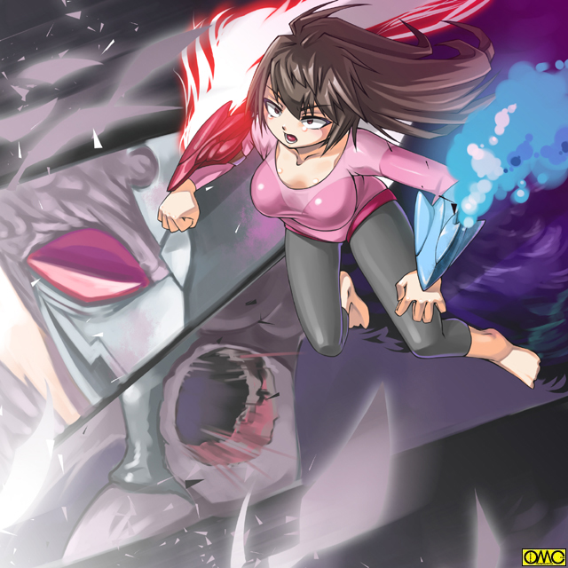

平穏な一日であった。
初夏のさわやかさに満ちた一日であった。
普通に授業が進み、たわいないおしゃべりをして、ごくごく普通に過ごしていた。
退屈とすらいえる一日だが、清良はそれを物凄く愛しく思えていた。
（このまま何もなければ）
無理を承知で願ってしまう。
ついつい目で追う幼なじみの少女。
不安を隠す。あるいは吹き飛ばすためかこの日はことさらよく笑う。
それがひどく無理をして見えて痛々しかった。
決着をつけるときが着た。その使者が校門で待ち構えていた。
おりしも放課後。下校する生徒がじろじろと奇異の目で見ている。
ハリネズミのように頭髪を逆立てた少年。パックなファッションをしている。
「……てめぇ……針草」
「よう。高岩。ちょっと付き合えよ」
軽いのりで言ってくる。
「生憎それほど暇じゃねえ」
軽くいなす清良。
「キヨシ……」
傍らの友紀が不安そうに清良を見上げる。
「くくく。これでもか？」
一瞬。画像の揺らぎのように姿が変り、そして元に戻った。
「テメエ……憑かれたと言う訳か？」
幸い大半の生徒は係わり合いを嫌い足早に通り過ぎた。友紀は清良を見ていた。
「変身」を見ていたのは清良だけである。
「付き合わないなら部活中の生徒の皆さんが針の山になるけどな」
清良はしかめっ面をした。だが「覚悟」を決めた。
「付き合ってやる。だが場所は変えるぞ」
戦乙女セーラ
ＥＰＩＳＯＤＥ２４「墜落」
河川敷。友紀を先に帰した清良が選んだ場所はここだ。
整備が進んでおらず足元も悪いため運動部が練習に使うこともない。
人気がなく戦うにはちょうどよかった。
「あー。いいねぇ。俺もあんまりこの姿を見せたくないんだわ」
軽い調子で言うと針草は異形へと転じる。
頭部がサボテンといわれて連想するそのままに。
その中に目鼻がある形だ。後は緑色の肌をした女の肉体に、サボテンの針が無数に生えている状態。
「よいしょっと」
軽薄な調子でカクタスアマッドネスは武器を出現させる。
サボテンの意匠の棍棒だがどことなく野球のバットを連想させる。
「どうしたよ。さっさと変身しろや。戦乙女様によ。それを倒しにきたんだからな」
どうやら取り付いたノトもこういう性格らしい。
「……しねえ」
清良はぼそっとつぶやく。
「あ？」
「もう二度と変身なんざしねえ」
言うなり清良は伸縮警棒を抜いて、間合いへと飛び込んで行った。
帰路。友紀は不安な表情をしている。
ただし朝の自分の不安ではなく、幼なじみの安否を気遣うそれ。
「大丈夫かな？ 清良」
清良が他校の不良に絡まれるのはもちろん初めてではない。
そのたびに清良は巻き込まないために友紀を先に帰す。
一度は心配で駆けつけたが、その際に人質にされてしまい清良が大怪我をした。
それからは二度と清良のケンカには自分から付き合わないようにしていた。
どれほど心配でもだ。
まさか自分が清良を苦しめているとは知る吉もなかった。
大柄な少年と普通の体格の女。しかし普通の少年と「怪人」では男女のハンデを考えても体力差がありすぎた。
棍棒であっさりと弾き飛ばされて、追撃で全身から生えた針を飛ばして打ち込まれた。
「ぐあああっ」
頭部を守りながら避けたが何発かは命中した。苦悶の声を上げる。
「セーラ様。どうして？」
黒猫の姿の従者が駆けつけた。
「どうやらファルコンの野郎は『セーラ』にだけ反応するらしいからよ……それなら俺が変身しなけりゃいいだけのこった。そうすりゃ二度と友紀はあんな姿にならねぇ」
「無茶です。セーラ様」
「そうでもないぜ……」
清良の目は一点に注がれていた。
一方のカクタスアマッドネスは屈辱に打ち震えていた。
「ふ……ふざけやがって。ひ弱なミュスアシの民如きに、栄誉ある戦士であるこの私を倒せるというなら倒してみろ！」
戦闘用に能力を移植した「改造人間」の誇りをいたく傷つけられた。逆上する。
ふたたび針を飛ばして攻撃する。当然だがいかに広範囲といえど攻撃されていない部分もある。
清良は前方へと飛び込んだ。そしてカクタスの懐に飛び込む。だが攻撃しようにも全身が針で覆われている。
「こいつ！」
カクタスは棍棒を振り上げる。清良はアンテナを収納するように伸縮警棒を縮め、その短い鉄の棒で棍棒を握る拳そのものを狙った。
自ら振り下ろした力と、振り上げる清良のパワーで一種のカウンターに。
たまらず棍棒を落としてしまうカクタス。即座にそれを拾い上げ「そらよっ」と気合を入れてそのままバットスイングのように思い切り降りぬく清良。
「ぐはあっ」
これだと針のガードも関係ない。それどころか自分の肉体の一部を変化させて作った棍棒の『針』が刺さり苦しんでいる。
「思った通りだぜ。さすがにグリップにまでは針はねえ。あったら持ちにくいもんな」
獲物を獲て形勢逆転。滅多打ちにする。
どうやら針に守られている分だけ打たれ弱いらしくあっと言う間にグロッキーするカクタス。
「ようし。この調子で全部倒してやる」
清良の決めた覚悟。それは本来の姿のままアマッドネスとの戦いを続けると言うものだった。
そしてファルコンを友紀の中に閉じ込めたままにするつもりだった。
「だ……ダメです。セーラ様っ。払うには戦乙女の聖なる力でないと出来ません」
「な……なんだと？」
「ましてやアマッドネスとして死んでしまったら、そのまま取り付かれた人間も道連れです」
故にジャンスはファルコン狙撃を諦めて、ルコによって瀕死のシースターを聖なる力で倒すことを優先したのだ。
「………ちっくしょおーっっっっ」
目論見が外れた清良は、瞬間的にセーラへと転じた。
その刹那、友紀の意識が途絶えた。いれかわり眠る悪魔が目を覚ました。
「ふふふっ。今度こそ殺してくれる」
邪悪な声でつぶやくそれは既にファルコンアマッドネス。
大きな翼を広げて戦場へと飛んでいく。
それを遠方から察知していたのがウォーレン。
「やっぱでやがったぜぇ」
ウォーレンもジャンスも友紀がファルコンとはわかっていない。
ただファルコンは現場に駆けつける際に必ず高度をとる。
それですぐにわかるのである。
そしてまだセーラを付けねらっているうちに倒してしまおうと考えている順は、逆にファルコンを付けねらっていた。
この日も既に福真市へと向かっていたのである。
出現したので主従は合流へと。
エンジェルフォームになり、すぐにキャストオフでヴァルキリアフォームに。
そして超変身を立て続けに行う。マーメイドフォームだ。
いきなりランスを突きたててとどめを刺す。
「ぐぅおわぁぁぁぁっ」
カクタスは連続攻撃に耐え切れず爆裂した。後に残るは全裸の少女。
（よし。奴が来る前に元に戻れば）
間に合わなかった。羽手裏剣が飛んできていた。
守りの堅いマーメイドゆえにダメージは少ない。上空を見上げる。
エジプト神話のホルスを思わせるアマッドネスがそこにいた。
「……友紀……」
「セーラ。今日こそは貴様を殺す。六武衆。飛将の名にかけて」
緩やかに降りながら宣言するファルコン。
六武衆は将軍ガラの下すべて対等。故に肩書きもそれぞれが持ち合わせていた。
セーラは一歩も動かない。ただ姿をエンジェルフォームへと戻しただけだ。
「さあ。戦え。セーラぁぁぁっ」
刀を抜き襲い掛かるファルコン。セーラは避けるもののその場からは動かない。
「刀だけだと思うなよっ」
ルコの膝が入る。
「ぐっ」
思わずくの字になるセーラ。
一応は女の肉体である。子宮も存在している。ちょうどその位置だ。
「ほらほら。反撃したらどうだ？」
暴力に酔いしれ殴り続けるファルコン。むしろルコか。
「手が…出せるわけないだろ…」
（セーラ様。もうだいぶ経つのに？）
時間がかなりたっているのにもかかわらず、精神が女性化していない。
「なんだと？」
戦闘だけに生きてきたアマッドネスには理解不能の感情だ。
「友紀……俺はやっぱりお前を殴ったりなんか出来ないよ……代りに好きなだけ殴れ。俺が何か悪かったのなら、それで侘び代わりだ……」
友紀への強い思いがセーラの肉体でありながら清良の精神のままでいさせていた。
「世迷言を。好きなだけ殴れと言うならそうさせてもらうわ」
既に狂気の域に達しているルコがなぶり殺しとばかりにセーラを滅多打ちにする。
防御形態のエンジェルフォームゆえに三桁の打撃数にも耐えられている。
しかしてそれにも限界はある。
最後にルコが放った蹴りがセーラを吹っ飛ばす。地面に叩きつけられる。
それで限界を超えた。とうとう気を失う。戦闘中だがファルコンの目前で変身を解除してしまった。
これが運命を分けた。正体を知っているはずのファルコンが驚いた表情になる。
「キ…ヨシ！？」
その声は友紀の澄んだ声だった。
合流した順とウォーレン。とりあえずはバイクモードで移動開始。
ロケットモードは目立つので人気のないところか、緊急時だけに絞っていた。
走りながら変身してジャンスに。
一路戦闘区域に。
横たわる清良を見てファルコンが動揺している。
（しまった！！ 目の前で正体を知ってはもはや嫉妬を利用できない。こうなれば）
嫉妬心を利用するためそこだけつなげていたのが仇になった。
セーラが清良と気がついてしまったのだ。
そうなればもはや分離の意味はない。意識を融合に掛かる。それが仇となった。
意識が融合したことで友紀はこれまですべてのことを理解してしまった。
もちろん主導権を取れる前提だった。ところがそれが出来ない。
（どういうことだ？ なぜ？）
すべて優位に進めてきたルコが焦る。もう一つの心が叫ぶ。
「いやぁぁぁぁぁっ。あ……あたし、なんてことを。キヨシを殺そうとしていたなんて」
強い悔恨。罪の意識。それが悪の誘惑とも言うべきルコの心を拒絶していた。
「う……うう」
時間にして５分程度。それが清良の気絶していた時間。ぼんやりと意識が戻る。
目に飛び込むは苦悩するハヤブサの異形。
「友紀！？」
瞬間的に目が醒めた。よろよろと立ち上がる。まだふらついている。
「キヨシ。来ないで！」
紛れもなく友紀の声で喋る。思わず動きが止まる清良。
「あたし…キヨシにどんな顔して…」
なんと涙を流すハヤブサの異形。そして翼を広げて大空へと逃げていく。
「待てよ！ 友紀」
きしむ体に鞭打って清良は変身した。
エンジェル。ヴァルキリア。そしてフェアリーへと転じたときはもう影も形も見えなくなっていた。
それでもセーラは追いかけて行った。
ここで逃がすと大事なものを永遠になくしてしまいそうだったから。
泣きながら大空を行くファルコン。本来の心は手も足も出ない。散々友紀の肉体を弄んだ報いか。
奪い返された。それどころかアマッドネスの力までのっとられてしまった。
（止まれ。引き返せ。あそこまで追い詰めてなぜ逃げる？）
（黙りなさいっ！ あなたのせいであたしはキヨシにひどいことを）
完全に主導権を握られた。
（何てことだ……空の将。飛将とまで言われたこの私が、たかが恋心に敗れ去るとは）
恋心を悪用したしっぺ返しで、自分の能力を乗っ取られるという屈辱を味わう羽目になったルコである。
こんなことをしていたせいか、友紀が能力。あるいはスピードになじんでないせいか飛翔速度は遅かった。それゆえにセーラ。そしてもう一つの存在も追いついた。
前方に回りこんで制止する。友紀が主導権を握るファルコンが停止した。
「キヨシ……」
「友紀。やっと追いついた。さあ。帰ろう」
少女への強い思いがセーラの精神を清良のままにとどめていた。
美少女の顔なのに男の子のように微笑むセーラ。しかし友紀は首を横に振る。
「帰れない。あたし、あなたにとてもひどいことを。勝手に誤解して、勝手に嫉妬して」
「いいんだ。悪いのはみんなアマッドネスなんだから」
いささか軽い印象だが事実ではある。
「さぁ。帰ろう。ふふ。随分と遠くまできたよな」
東京湾沖だった。別に何の根拠もなかった。ただでたらめに飛んでいたらここにいたのだ。
たまたまなのか船舶がいない。陸地からもだいぶ遠い。まず目撃される心配はない。
「でも、あたしの中にそのアマッドネスが」
「出さないようにするよ。俺が絶対に」
間違いなく女の子の肉体だが、その表情と口調は凛々しい男の子だった。
「キヨシ…」
その気遣いが嬉しくてほんの一瞬、張り詰めていたものが解けた。それが隙となった。
（今だ。もう一度奪い返す）
しぶとく諦めていなかったルコが主導権を奪い返した。
「死ね。セーラ」
「友紀？」
ファルコンアマッドネスが爪を振り上げて攻撃してくる。しかし今度はファルコンに多大な隙が生じた。
彼女は空気を引き裂く音と共に動きを止めた。背中から入った衝撃が、腹部を蹴散らして抜けて行った。
信じられないと言う表情で大穴を見る。そして怒りや絶望などすべての感情をを飛び越して笑いが出た。
「わ…すれて…いた…ジャンスか」

このイラストはＯＭＣによって作成されました。
クリエイターのていくあうとさんに感謝！
かなり離れた空。ウォーレン・ロケットモードに支えられてジャンスが狙撃を遂行していた。
別に煙は出ていないのだが超変身をした姿のジャンスは銃口の煙をふくような仕草をした。
「はい。完了。やっとこれで片付いたわね」
「それじゃさっさと逃げようぜ。得物を横取りしたからセーラがカンカンかもな」
「別に文句くらい聞いてあげるわよ。そうねぇ。挨拶もまだだし。しばらくはこっちの学校でセーラさんが来るのを待ちましょうか」
仕事が終わったとばかりにのん気な会話をして、ジャンスはウォーレン・ロケットモードで帰途に着く。
目立たないところで陸地に戻り、バイクモードで帰るつもりだ。
「キ…ヨ…シ」
「これでよかったんだ」とでも言いたそうに微笑みながらファルコンがゆっくりと落ちていく。
「友紀！？」
慌ててつかまえようとするが運悪くその瞬間に爆発。
「ぐっ」
これで完全にファルコンアマッドネスの魂は分離されたが、逆に言えば生身の人間。
海面からかなりの高さである。生身の人間が落下すればただではすまない。
そして爆発でセーラは上に飛ばされ、友紀は下へと加速する。距離が開いた。
「まずい」
高速飛行で何とか落下する友紀より下に出た。
しかし非力なフェアリーでは支えきれない。
（こうなったら）
高揚した故かガントレットを叩かなくてもマーメイドへのチェンジが発動した。
これなら海中でも自在に動けるし、落下衝撃にも耐えられる。
気絶した友紀をきつく抱き締めて頭部を守る。そしてドリルのように回転する。
少しでも落下衝撃を散らせるためだ。
（誓ったんだ。友紀を絶対に守るって）
二人の少女は海を穿ち落ちて行った。それでもセーラは友紀をきつく抱き締めて離そうとはしなかった。
セーラはちょっと躊躇ったものの友紀の口を自らの口でふさいだ。
自分自身は長い髪が魚のえらのように酸素を取り込める。
それを友紀に分け与える目的だ。
全裸の友紀を、それも直前まで怪人だったそれを人前に晒したくない。
海中をセーラは必死に泳ぎ、その場を離脱していた。
警視庁。三田村の部屋。ノック音がする。
「入りたまえ」
許可を出すと「失礼します」と一言いい軽部が入ってきた。一泊の間をおき「飛将が落ちました」と報告した。
「邪将・スストに続いてというわけか。意外に人の心というのは侮れんな」
どうやら結果を予見していたようだ。
「もはやその小娘に邪心がないから憑けない。家族もダメか。この手はもう使えんな」
「は」
「とりあえず六武衆を投入するのは待て。恋人を弄ばれた奴の怒りは能力以上の物を与えるだろうからな。返り討ちにあう確率が高い。消耗させるのは得策ではない」
何とか川を遡り、人気のないところまで出た。
体力は限界に達していたが上にあがる。
ふらふらしながらも一度変身を解除するセーラ。
服が再構成されて乾いた状態に。学生服を脱ぎ、ワイシャツの両方の袖を引きちぎる。
それからまたセーラへと変身。
袖だったものをタオル状に変化させて友紀の体の水滴を丹念にふき取る。
終わったら「タオル」を胸と腰に当て、下着へと変化させる。
学生服を羽織らせてワンピースへと作り変える。
「これでヨシ……火が欲しいけど」
不良とはいえどタバコを吸わない清良は火種を持っていなかった。
「仕方ない。ある意味じゃ女でよかったかな？」
セーラは友紀を抱き締めた。そしてお互いの体温で冷え切った体を温めていた。
意識を失うと友紀が恥ずかしい格好になるので、睡魔と闘いながら抱き締めていた。
「ん……」
「気がついた？」
さすがは戦乙女というべきか。じっとしているうちに体力が回復していた。それで意識を保ったまま過ごせていた。
「キヨシ……なのね」
口付けが出来そうな至近距離の美少女の顔に問いかける。
「……うん」
もう隠さない。最初から説明をすることにした。
ルコの残した記憶とですべてを理解できた友紀は泣いていた。
「ごめんなさい。本当にどうやって謝ったらいいのか」
「あたしの方こそごめんなさい。巻き込みたくなかったんだけど、逆にこうして辛い思いをさせて」
山場が過ぎたせいか今度は女性化しているセーラの意識。
「あたし……って、キヨシ。そこまで女の子になっちゃうの？」
「うん。だからある意味では取られるというのも間違いじゃないのよね」
「ううん。でもやっぱりキヨシだ。優しいもん」
すべての邪心を吸い上げられた友紀は、これまでの被害者同様に子供のようになっていた。
「そうでもないよ。アマッドネスに対しては怒り狂っている」
まさに三田村の危惧した通りだ。だがそれだけではない。
「それに……いくら戦乙女のなすべきこととはいえど、友紀のことを撃ったジャンスにも怒っている」
それまで優しい笑みを浮かべていたセーラの表情が、怒りに歪んでいた。